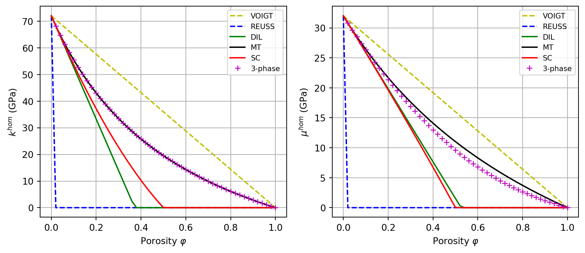
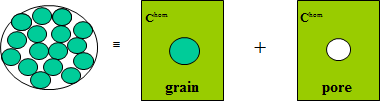
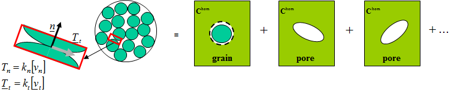
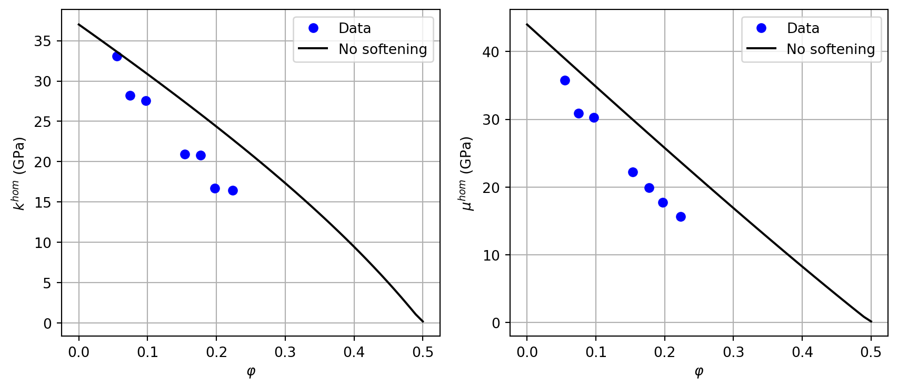
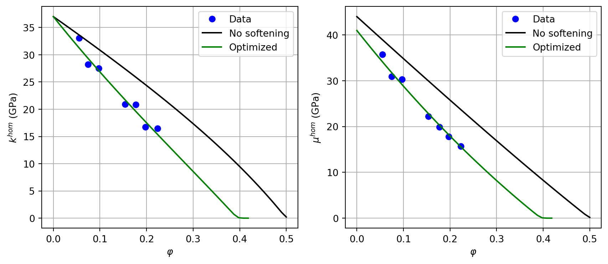
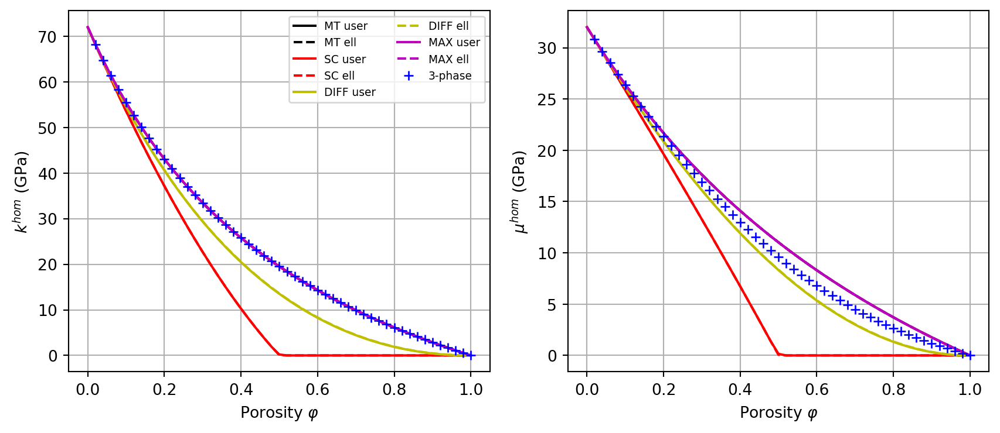

import numpy as np
from echoes import *
import math
import matplotlib.pyplot as plt
np.set_printoptions(precision=8, suppress=True)15 Exercises on homogenization schemes
Important
This tutorial provides hands-on exercises on homogenization schemes: porous medium with all schemes, the 3-phase model, a multiscale hierarchical structure, and parameter identification on sandstone.
Tip
Exercise 1: Elasticity of a porous medium
Caution
The objective is to plot the bulk and shear moduli of a porous medium as a function of porosity, comparing the schemes VOIGT, REUSS, DIL, MT, SC, and the 3-phase model.
The solid phase is isotropic with \(k_s=72\) GPa and \(\mu_s=32\) GPa. The pores are represented by a near-zero stiffness material (\(k_p=10^{-6}\), \(\mu_p=10^{-6}\)).
Build a function
buildrve(ws, wp)returning thervein which the solid and pores are randomly distributed spheroids with respective aspect ratioswsandwp.Build a function
Chom(myrve, phi, sch)returning the tuple(khom, muhom). Handle non-physical negative values by replacing them with 0.Plot \(k^{hom}(\varphi)\) and \(\mu^{hom}(\varphi)\) for all 5 schemes with spherical inclusions.
The 3-phase model consists in a self-consistent scheme with a single phase: a 2-layer sphere with a spherical pore as inner core (radius \(\varphi^{1/3}\)) surrounded by the solid. Build the corresponding
rve3phand functionChom3ph(phi).Add the 3-phase model curve to the comparison plot.
Change the aspect ratios to examine their impact on the predictions.
Solution
Cs = stiff_kmu(72., 32.)
Cp = stiff_kmu(1.e-6, 1.e-6)
def buildrve(ws, wp):
myrve = rve(matrix="SOLID")
myrve["SOLID"] = ellipsoid(shape=spheroidal(ws), symmetrize=[ISO], prop={"C": Cs})
myrve["PORE"] = ellipsoid(shape=spheroidal(wp), symmetrize=[ISO], prop={"C": Cp})
return myrve
def Chom(myrve, phi, sch):
myrve["PORE"].fraction = phi
myrve["SOLID"].fraction = 1. - phi
C = homogenize(prop="C", rve=myrve, scheme=sch,
verbose=False, epsrel=1.e-10, maxnb=300, select_best=True)
return max(C.k, 0.), max(C.mu, 0.)
# 3-phase model: SC with a single 2-layer sphere (pore core + solid shell)
rve3ph = rve(matrix="SPN")
rve3ph["SPN"] = sphere_nlayers(radii=[0.5, 1.], fraction=1., prop={"C": [Cp, Cs]})
def Chom3ph(phi):
rve3ph["SPN"].set_radius(0, math.pow(phi, 1./3.))
C = homogenize(prop="C", rve=rve3ph, scheme=SC, verbose=False)
return max(C.k, 0.), max(C.mu, 0.)
lphi = np.linspace(0., 1., 51)
myrve_sph = buildrve(1., 1.)
fig, (ax1, ax2) = plt.subplots(1, 2, figsize=(9, 4))
for sch, sty in zip([VOIGT, REUSS, DIL, MT, SC],
['y--', 'b--', 'g-', 'k-', 'r-']):
lk, lmu = [], []
for phi in lphi:
k, mu = Chom(myrve_sph, phi, sch)
lk.append(k); lmu.append(mu)
ax1.plot(lphi, lk, sty, label=str(sch))
ax2.plot(lphi, lmu, sty, label=str(sch))
lk3, lmu3 = [], []
for phi in lphi:
k, mu = Chom3ph(phi)
lk3.append(k); lmu3.append(mu)
ax1.plot(lphi, lk3, 'm+', label="3-phase")
ax2.plot(lphi, lmu3, 'm+', label="3-phase")
for ax, ylabel in [(ax1, r"$k^{hom}$ (GPa)"), (ax2, r"$\mu^{hom}$ (GPa)")]:
ax.set_xlabel(r"Porosity $\varphi$")
ax.set_ylabel(ylabel)
ax.grid(True)
ax.legend(fontsize=8)
plt.tight_layout()
plt.show()
Exercise 2: Multiscale hierarchical structure
Caution
A 3-phase model is built with a microporous solid: the solid shell of the 2-layer sphere is itself a porous material homogenized at a lower scale.
Consider the following global volume fractions:
- solid mineral: \(f_s = 0.70\)
- macropores: \(f_M = 0.20\)
- micropores: \(f_m = 0.10\)
The solid mineral has the same properties as in Exercise 1 (\(k_s=72\) GPa, \(\mu_s=32\) GPa).
The microporous solid is obtained at the lower scale by homogenizing a porous solid (Mori-Tanaka scheme, spheroidal pores with aspect ratio \(\omega_p=0.2\)). Its porosity is \(\varphi_\text{low} = f_m / (f_s + f_m)\).
At the upper scale, use a 3-phase SC model: a single sphere_nlayers inclusion with the macropore as inner core (fraction \(f_M\)) and the microporous solid as outer shell (fraction \(1-f_M\)).
Solution
fs, fM, fm = 0.7, 0.2, 0.1
# Lower scale: microporous solid via MT (spheroidal pores, omega=0.2)
phi_low = fm / (fs + fm)
Clow = stiff_kmu(*Chom(buildrve(1., 0.2), phi_low, MT))
# Upper scale: 3-phase SC model
rvemacro = rve(matrix="SPN")
rvemacro["SPN"] = sphere_nlayers(radius=1., layer_fractions=[fM, 1 - fM],
fraction=1., prop={"C": [Cp, Clow]})
C = homogenize(prop="C", rve=rvemacro, scheme=SC, verbose=False)
print(f"Lower scale — microporous solid: k = {Clow.k:.3f} GPa, mu = {Clow.mu:.3f} GPa")
print(f"Upper scale — homogenized mortar: k = {C.k:.3f} GPa, mu = {C.mu:.3f} GPa")Lower scale — microporous solid: k = 40.447 GPa, mu = 22.777 GPa
Upper scale — homogenized mortar: k = 25.552 GPa, mu = 15.117 GPaExercise 3: Parameter identification on sandstone
Caution
Sandstone can be modelled as a granular assemblage. The grain mineral is isotropic with \(k_s = 37\) GPa and \(\mu_s = 44\) GPa. A self-consistent scheme is used with:
- Grain inclusions:
sphere_nlayerswith a single layer (sphere of radius 1) and a compliant interface parametrized by normal stiffness \(k_n\) and tangential stiffness \(k_t\). - Pore inclusions: spheroidal pores with aspect ratio \(\omega\).


The following experimental data give \(k^{hom}\) and \(\mu^{hom}\) (GPa) as a function of porosity:
Build the
rvefor the granular model and a functionChom_sand(f, omega, kn, kt)returning(khom, muhom). UsetZ4for pore stiffness andPRIMALDISCinterface type.Plot the initial model without softening (\(\omega=1\), \(k_n = k_t = +\infty\)) against the data.
Use
nlopt.LN_NELDERMEADto minimize the sum of squared relative errors on \(k\) and \(\mu\) over all data points with respect to \((\omega, k_n, k_t)\).Plot the optimized model vs. data.
Solution
ks_sand = 37.
mus_sand = 44.
Cs_sand = stiff_kmu(ks_sand, mus_sand)
ver = rve()
ver["GRAIN"] = sphere_nlayers(radii=[1.], prop={"C": [Cs_sand]})
ver["PORE"] = ellipsoid(shape=spherical, symmetrize=[ISO], prop={"C": tZ4})
def Chom_sand(f, omega, kn, kt):
ver["GRAIN"].fraction = 1. - f
ver["GRAIN"].set_interf_prop({"C": [[kn, kt, PRIMALDISC]]})
ver["PORE"].fraction = f
ver["PORE"].shape = spheroidal(omega)
C = homogenize(prop="C", rve=ver, scheme=SC, epsrel=1.e-15, maxnb=100)
return C.k, C.mu
# ── Initial model (no softening: rigid interfaces, spherical pores) ────────
lphi = np.linspace(0., 0.5, 50)
lk0, lmu0 = [], []
for phi in lphi:
k, mu = Chom_sand(phi, 1., math.inf, math.inf)
lk0.append(k); lmu0.append(mu)
fig, (ax1, ax2) = plt.subplots(1, 2, figsize=(9, 4))
ax1.plot(data_phi, data_k, 'bo', label="Data")
ax1.plot(lphi, lk0, 'k-', label="No softening")
ax1.set_xlabel(r"$\varphi$"); ax1.set_ylabel(r"$k^{hom}$ (GPa)")
ax1.legend(); ax1.grid(True)
ax2.plot(data_phi, data_mu, 'bo', label="Data")
ax2.plot(lphi, lmu0, 'k-', label="No softening")
ax2.set_xlabel(r"$\varphi$"); ax2.set_ylabel(r"$\mu^{hom}$ (GPa)")
ax2.legend(); ax2.grid(True)
plt.tight_layout()
plt.show()
Solution (optimization)
import nlopt
def J(x, grad):
omega, kn, kt = x[0], x[1], x[2]
res = 0.
for i in range(len(data_phi)):
khom, muhom = Chom_sand(data_phi[i], omega, kn, kt)
res += (1. - khom / data_k[i])**2 + (1. - muhom / data_mu[i])**2
return res
opt = nlopt.opt(nlopt.LN_NELDERMEAD, 3)
opt.set_lower_bounds([0.1, 0., 0.])
opt.set_upper_bounds([1., math.inf, math.inf])
opt.set_min_objective(J)
opt.set_xtol_rel(1e-10)
opt.set_maxeval(10000)
opt.set_maxtime(1000)
x_opt = opt.optimize([0.5, 1.e3, 1.e3])
print(f"Optimal pore aspect ratio: omega = {x_opt[0]:.4f}")
print(f"Optimal interface stiffness: kn = {x_opt[1]:.1f} GPa/m, kt = {x_opt[2]:.1f} GPa/m")
print(f"Residual J = {opt.last_optimum_value():.6f}")
# ── Comparison plot ────────────────────────────────────────────────────────
lk_opt, lmu_opt = [], []
for phi in lphi:
k, mu = Chom_sand(phi, *x_opt.tolist())
lk_opt.append(k); lmu_opt.append(mu)
fig, (ax1, ax2) = plt.subplots(1, 2, figsize=(9, 4))
ax1.plot(data_phi, data_k, 'bo', label="Data")
ax1.plot(lphi, lk0, 'k-', label="No softening")
ax1.plot(lphi, lk_opt, 'g-', label="Optimized")
ax1.set_xlabel(r"$\varphi$"); ax1.set_ylabel(r"$k^{hom}$ (GPa)")
ax1.legend(); ax1.grid(True)
ax2.plot(data_phi, data_mu, 'bo', label="Data")
ax2.plot(lphi, lmu0, 'k-', label="No softening")
ax2.plot(lphi, lmu_opt, 'g-', label="Optimized")
ax2.set_xlabel(r"$\varphi$"); ax2.set_ylabel(r"$\mu^{hom}$ (GPa)")
ax2.legend(); ax2.grid(True)
plt.tight_layout()
plt.show()Optimal pore aspect ratio: omega = 0.2139
Optimal interface stiffness: kn = 3576732812105654.0 GPa/m, kt = 684.8 GPa/m
Residual J = 0.023753
Exercise 4: User-defined inclusion for porous media
Caution
The user_inclusion class (see Chapter 10) allows supplying the concentration tensors analytically inside build_all(). The goal of this exercise is to re-implement the porous-medium homogenization of Exercise 1 using user_inclusion instead of ellipsoid, and to verify the consistency of the two approaches.
The solid mineral and pore properties are identical to Exercise 1 (\(k_s=72\) GPa, \(\mu_s=32\) GPa; \(k_p=\mu_p=10^{-6}\)).
Implement a class
MyIncl(user_inclusion)whosebuild_all()computes the concentration tensors analytically using the Hill polarization tensor for a sphere in an isotropic matrix (see 10.2): \[\uuuu{P} = \frac{1}{3k_0+4\mu_0}\left(\mathbb{J}+\frac{3(k_0+2\mu_0)}{5\mu_0}\,\mathbb{K}\right)\]Build an
rvenamedver_usrwith solid and pore phases asMyInclinclusions. Write a functionChom_usr(phi, sch)returning(khom, muhom).Check that
Chom_usrandChom(from Exercise 1) agree to machine precision for MT and SC at \(\varphi=0.3\).Plot \(k^{hom}(\varphi)\) and \(\mu^{hom}(\varphi)\) for schemes
MT,SC,DIFF, andMAX, comparing theuser_inclusioncurves (solid lines) with theellipsoid-based curves from Exercise 1 (dashed lines), and add the 3-phase model from Exercise 1 for reference.
Solution
import math
Cs_u = stiff_kmu(72., 32.)
Cp_u = stiff_kmu(1.e-6, 1.e-6)
class MyIncl(user_inclusion):
def __init__(self, prop, fraction=0., symmetrize=[]):
super().__init__(fraction, symmetrize)
for key, val in prop.items():
user_inclusion.set_prop(self, key, val)
def build_all(self):
C0 = self.ref.array
S0 = np.linalg.inv(C0)
k0, mu0 = self.ref.kmu
Ci = self.prop(self.refname).array
P = 1. / (3*k0 + 4*mu0) * (J4 + 3.*(k0 + 2*mu0) / (5*mu0) * K4)
eE = np.linalg.inv(Id4 + P.dot(Ci - C0))
eS = eE.dot(S0)
sE = Ci.dot(eE)
sS = Ci.dot(eS)
return {"eE": eE, "eS": eS, "sE": sE, "sS": sS}
ver_usr = rve(matrix="SOLID")
ver_usr["SOLID"] = MyIncl(prop={"C": Cs_u})
ver_usr["PORE"] = MyIncl(prop={"C": Cp_u})
def Chom_usr(phi, sch):
ver_usr["PORE"].fraction = phi
C = homogenize(prop="C", rve=ver_usr, scheme=sch, verbose=False)
return max(C.k, 0.), max(C.mu, 0.)
# Consistency check vs ellipsoid approach (Exercise 1)
myrve_check = buildrve(1., 1.)
phi_test = 0.3
for sch in [MT, SC]:
ku, muu = Chom_usr(phi_test, sch)
ke, mue = Chom(myrve_check, phi_test, sch)
print(f"{str(sch):4s} user: k={ku:.6f} mu={muu:.6f} | "
f"ellipsoid: k={ke:.6f} mu={mue:.6f} | "
f"err_k={abs(ku-ke):.1e} err_mu={abs(muu-mue):.1e}")MT user: k=33.460582 mu=17.626742 | ellipsoid: k=33.460582 mu=17.626742 | err_k=0.0e+00 err_mu=0.0e+00
SC user: k=22.689245 mu=13.264364 | ellipsoid: k=22.689235 mu=13.264360 | err_k=9.9e-06 err_mu=4.5e-06Solution (plot)
lphi_u = np.linspace(0., 1., 51)
myrve_sph_u = buildrve(1., 1.)
fig, (ax1, ax2) = plt.subplots(1, 2, figsize=(9, 4))
for sch, color in zip([MT, SC, DIFF, MAX], ['k', 'r', 'y', 'm']):
lk_usr, lmu_usr = [], []
lk_ell, lmu_ell = [], []
for phi in lphi_u:
ku, muu = Chom_usr(phi, sch)
ke, mue = Chom(myrve_sph_u, phi, sch)
lk_usr.append(ku); lmu_usr.append(muu)
lk_ell.append(ke); lmu_ell.append(mue)
ax1.plot(lphi_u, lk_usr, color=color, ls='-', label=f"{str(sch)} user")
ax1.plot(lphi_u, lk_ell, color=color, ls='--', label=f"{str(sch)} ell")
ax2.plot(lphi_u, lmu_usr, color=color, ls='-')
ax2.plot(lphi_u, lmu_ell, color=color, ls='--')
# 3-phase model from Exercise 1
lk3, lmu3 = [], []
for phi in lphi_u:
k, mu = Chom3ph(phi)
lk3.append(k); lmu3.append(mu)
ax1.plot(lphi_u, lk3, 'b+', label="3-phase")
ax2.plot(lphi_u, lmu3, 'b+')
for ax, ylabel in [(ax1, r"$k^{hom}$ (GPa)"), (ax2, r"$\mu^{hom}$ (GPa)")]:
ax.set_xlabel(r"Porosity $\varphi$")
ax.set_ylabel(ylabel)
ax.grid(True)
ax1.legend(fontsize=7, ncol=2)
plt.tight_layout()
plt.show()
\(\,\)